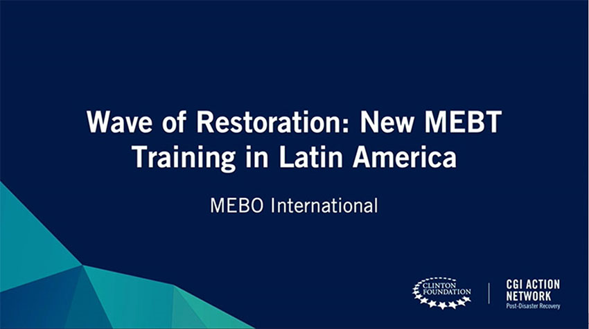
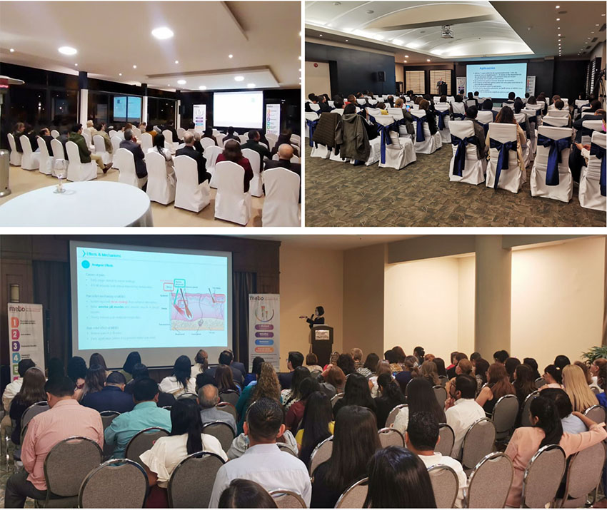
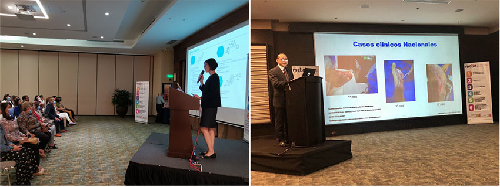
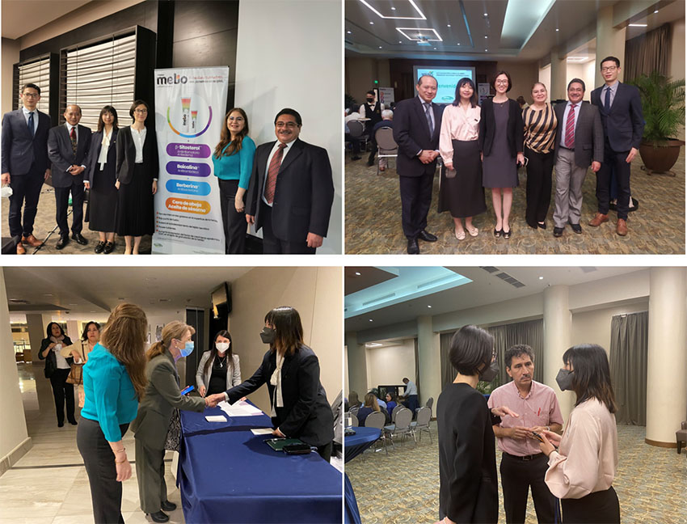

En 2019, Kevin Xu, Presidente del Grupo MEBO, anunció en la reunión de la Fundación Clinton que MEBO International se uniría a la Fundación para impartir formación en tecnología médica regenerativa en toda América Latina: el programa 'Ola Regenerativa — Formación MEBT en América Latina'. Aplazado por la pandemia, el compromiso se renovó en 2022: junto con su socio latinoamericano Difare, MEBO International reinició oficialmente la Ola Regenerativa en septiembre, cumpliendo la promesa de capacitar a 160 profesionales médicos de la región.

La primera sesión tuvo lugar en Quito el 6 de septiembre, con más de 50 sanitarios locales presenciales, conectados en directo con una segunda sede en Cuenca con más de 40 participantes. La sesión también se transmitió en línea, permitiendo a otros 188 profesionales de América Latina aprender e interactuar en tiempo real.
La segunda sesión, celebrada en Guayaquil el 7 de septiembre, recibió una acogida aún más cálida: los médicos locales llevan más tiempo aplicando la tecnología médica regenerativa y con mejor base. Una sesión prevista para 80 asistentes superó finalmente los 100, lo que obligó a los organizadores a añadir asientos sobre la marcha.

Los participantes procedían de hospitales públicos, privados y clínicas, y abarcaban quemaduras, cirugía plástica, endocrinología, ginecología y pediatría, prueba del amplio reconocimiento local de la tecnología. Los medios locales cubrieron las sesiones con entrevistas y reportajes sobre el terreno.

El programa abordó dos temas: el desarrollo global de la tecnología médica regenerativa y su progreso actual en América Latina. Xu Weiwei, Directora de la Oficina de Beijing de la Sociedad Internacional de Medicina Regenerativa y Reparación de Heridas, presentó sistemáticamente la historia, las patentes y los mecanismos de la tecnología —entorno húmedo fisiológico, alivio del dolor, control de la inflamación, prevención de infecciones, mejora de cicatrices, licuefacción del tejido necrótico y promoción de la regeneración cutánea in situ— junto con investigaciones clínicas recientes y casos complejos.
El asesor médico de Difare, Eduardo Pactong, explicó después los principios TIME de preparación del lecho de la herida y cómo la tecnología médica regenerativa responde a cada paso, destacando su excelente perfil de seguridad y su importancia para embarazadas, recién nacidos y niños. Compartió casos latinoamericanos de éxito en quemaduras, pie diabético y cirugía plástica, y presentó mebo.education, el sitio académico con los últimos avances mundiales del campo.

En una animada ronda de preguntas, los ponentes respondieron más de veinte cuestiones: desde los efectos sobre los niveles del factor de crecimiento epitelial hasta la combinación con otras terapias y los procedimientos estandarizados. En 2019 prometimos capacitar a 160 sanitarios latinoamericanos; tres años después, hemos superado con creces esa meta al formar a 400. MEBO International seguirá ampliando los programas de formación en América Latina para llevar alivio y bienestar a más pacientes.